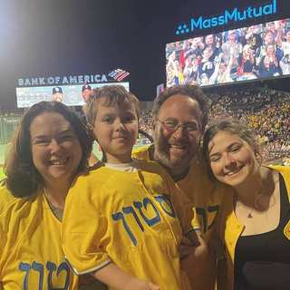

Community & History
Gallery
Images from Congregation Tifereth Israel, its people, and the wider story of Jewish life in Peabody.

Our Home
8 Pierpont Street
Congregation Tifereth Israel's longtime home in Peabody.

Family
Rabbi Phillip Blue and Family
Rabbi Phillip Blue with his wife, Miriam, and their two children.

CTI Community
At the CTI Ark
Elliot Hershoff, Doris Hershoff, and Joanne Pressman at Congregation Tifereth Israel.

Early CTI
The congregation in 1922
Archival photograph with its handwritten identification preserved.

Community Life
Anniversary Celebration
Photographs preserved in CTI's anniversary album.

Community Life
Anniversary Celebration
Additional photographs from the congregational celebration album.

2006
Community Photograph
A congregational photograph preserved with the kitchen-dedication materials.

Peabody Jewish History
Jewish Life in Peabody, 1958
Regional Jewish-history context; not identified as a CTI photograph.
From the CTI archive. These photographs document original plaques, programs, clippings, albums, and other materials preserved at the synagogue.